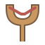
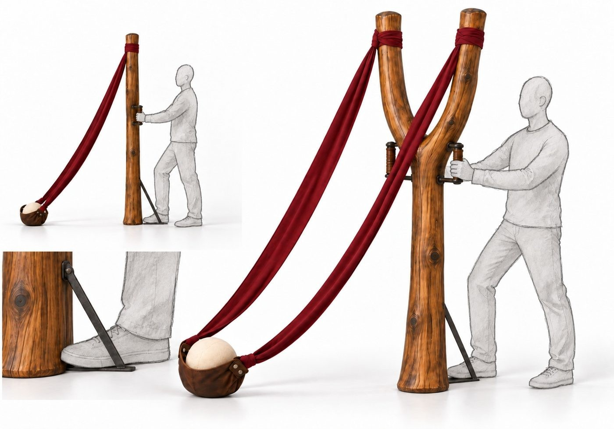

200 cm de alto · horqueta de 80 cm · rama de 8–10 cm
Estos dos juegos de 100 × 70 cm corresponden a C01. C02 cambia las asas, la lengüeta y la apariencia de bandas/bolsa para revisar postura en el visor. Los PDF aún no incorporan esos cambios; no fabricar C02 a partir de estos planos anteriores.
